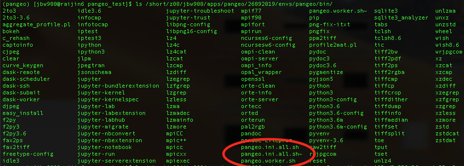
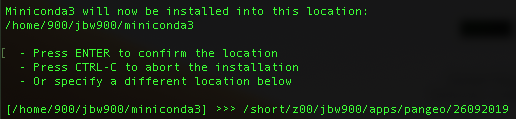
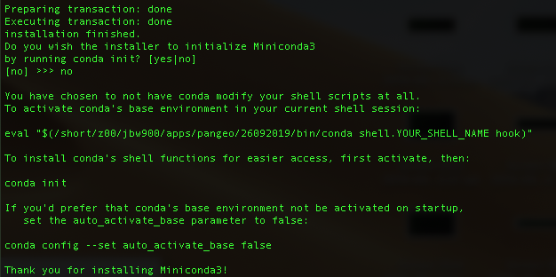
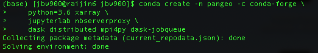
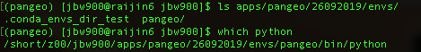

Pangeo Setup on Raijin/Gadi to run Xarray and Dask¶
In this notebook:
- Install conda and create an environment
- Configure Jupyter
- Launch Dask with a job scheduler
- Launch a Jupyter server for yoru job
- Connect to Jupyter and the Dask dashboard from your local computer
This example is created based on the document of from Pangeo website.
Installing a software environment¶
- Login Gadi
$ ssh -l aaa777 raijin.nci.org.au
- Make a new directory in where you install your own software, download and install Miniconda
$ mkdir pangeo
$ wget https://repo.continuum.io/miniconda/Miniconda3-latest-Linux-x86_64.sh
$ chmod +x Miniconda3-latest-Linux-x86_64.sh
$ ./Miniconda3-latest-Linux-x86_64.sh

- The license agreement will prompt for you to read. Press ENTER. Type >>> yes in the end.

- The default intallation path will be in your home directory, you can modify the path by specify the location.

- When installation is complete, you will be asked whether you want to initalise the enviornment. If you choose yes, then your default enviornment will conda when you login Raijin every single time. If you choose no, you can still activate your environment later on. We choose NO as we want to use pangeo environment in this case.

- Now we manually activate the conda enviornment.

- Create a new conda environment. Depending on your application, you may choose to add additional conda packages to this list. You can choose your own name. Here we use pangeo as the environment name.
$ conda create -n pangeo -c conda-forge \
python=3.6 xarray \
jupyterlab nbserverproxy \
dask distributed mpi4py dask-jobqueue
Depending on your application, you may choose to add additional conda packages to this list.

- Activate this environment
$ conda activate pangeo

Your prompt should now look something like this. You can check which python pangeo is using.

Configure Jupyter¶
Jupyter notebook servers include a password for security. We’re going to setup a password for ourselves. First we generate the Jupyter config file and invoking the commond when using recent Jupyter iteration. This created a file in ~/.jupyter/jupyter_notebook_config.py, where your password is stored.
(pangeo)$ jupyter notebook --generate-config
(pangeo)$ jupyter notebook password
Set up a Dask jobqueue using PBS job scheduler¶
- You need two files (pangeo.ini.all.sh and pangeo.worker.sh) to set up the jobqueue on Gadi. You can download a copy from the link above and store them in the executable directory, such as /short/z00/jbw900/apps/pangeo/26092019/envs/pangeo/bin/.
Remember to modify the path in those two files to match your case.¶
- Create a new directory to do your work.
(pangeo)$ mkdir pangeo_test
- Raijin/Gadi uses the PBS job scheduler
(pangeo)$ qsub -I -q express -lncpus=32,mem=64GB,jobfs=100GB
In this example, we require two nodes, 32cpus each, 64GB memory. It will take a little while before your get the resource that you asked for depending on the queue among other users in your group.
- Once it is complete, two files should appears.
- schedular.json
- xxx.sh
Set up password free login¶
- You might want to set up password free by adding your public key on Gadi. This will make handy later when you open your notebook on your local computer while interacting with Raijin/Gadi. Firsly, you need to find the public key of your computer.
$ cd
$ cd .ssh
$ ls
Notes: If the id_rsa.pub exist, copy the content of file id_rsa.pub. If not exist, check here for instruction on how to generate ssh keys.
- Login to Raijin/Gadi. In your home directory, find authorised_keys file, if not, you can create one. Paste your key into the file called authorized_keys.
$ cd
$ cd .ssh
$ emacs -nw authorized_keys
$ exit
- Logout and reconnect to Raijin/Gadi
$ ssh -l aaa777 raijin.nci.org.au
- Now you should be able to login Raijin/Gadi without password prompt.
Open up the Jupyter Notebook on your local computer¶
- Copy those files into the your local computer. Now the connection between Raijin and your local computer is established.
- You can open the your web browser, type localhost:xxxx to work on your notebook. The requests from your notebook allows you interactly work and communicate with Raijin/Gadi.
- On a new tab, type localhost:xxxx son your web browser, then you can monitor the job threads using the Dask dashboard